同列可比
同一列的方法使用同一份 sinogram；雙凸體像素法共享初始外框、值域與分割規則。
RECONSTRUCTION COMPARISON · 2026-09-30
單凸體作基準，重點看雙凸體比較與初始化失敗。紅線只供評估，不是重建輸入。
01 · SINGLE CONVEX BODY
單凸體不需要分離視角。全部量到的弦長都屬於同一個物體，可直接建立內、外包絡。
模型 未知物體 D 非空、緊緻、凸且有內部，密度為 1。資料無雜訊；detector 覆蓋完整投影，每個量測方向至少有一筆正值及兩側相鄰外點。
重建 正值投影的外側端點給出 P。若一條量測線與 P 的交段是 [a,b]、實測弦長是 g，則非空時 [b−g,a+g] 必在 D 內。這些線段的凸包是 Q；輸出 R=(Q+P)/2。
保證 若 Q 非空，則 Q⊆D⊆P，且 dH(D,R)≤½dH(P,Q)。這裡展示一輪包絡；雙凸體另有交替細化。

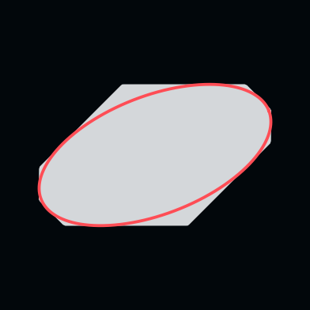
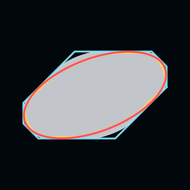
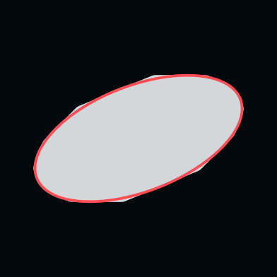
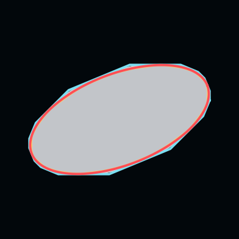

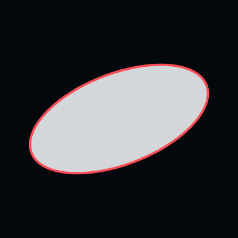
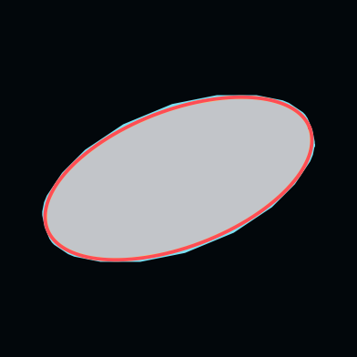
ALL 9 SINGLE-BODY PHANTOMS
外接端點 P 只使用零／正值位置；包絡法還使用每條線的弦長。4、8 角度時包絡中點的中位誤差低於 FBP 0.5；16 角度時略高。九個物體都是橢圓，不能推論所有凸體。
| 角度數 | FBP 0.5 | 外接端點 P | 包絡中點 R | 保證界 ½ dH(P,Q) |
|---|---|---|---|---|
| 4 | 0.096696 | 0.112633 | 0.055557 | 0.057502 |
| 8 | 0.025129 | 0.038672 | 0.018032 | 0.020402 |
| 16 | 0.006106 | 0.013219 | 0.006335 | 0.007986 |
同一批解析 Radon 樣本，Δs=0.01；FBP 使用固定 0.5 門檻、取與中心連通的輪廓再凸化，兩法都使用凸先驗。包絡法不知道橢圓參數；真值只供評估。HD 以 4096 個支撐方向數值評估，浮點包絡界未經區間算術認證。另以 9 個非橢圓凸多邊形設定檢查包含與誤差界。方法與證明 · 下載完整數值。
02 · TWO CONVEX BODIES
三例皆使用 8 個無雜訊角度。像素法共享相同初始外框與 0.5 分割規則；幾何欄顯示中點輸出，紅線是真值、藍線是外包絡、黃線是內包絡。
corners_0三角形＋四邊形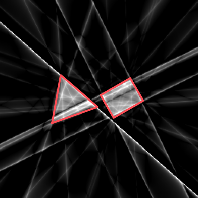
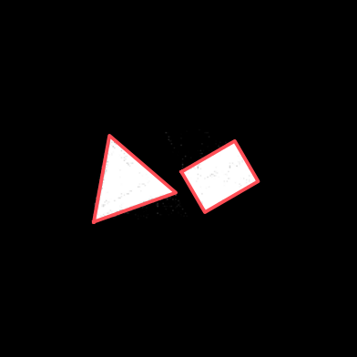
thin_0低厚度凸體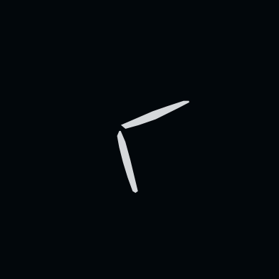
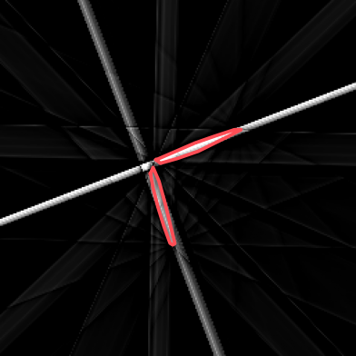
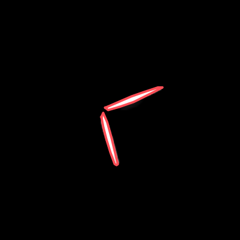
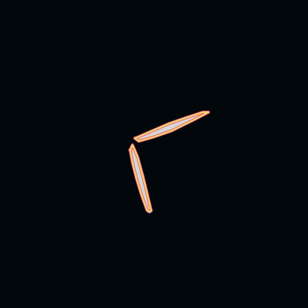
small_gap_0可初始化成功例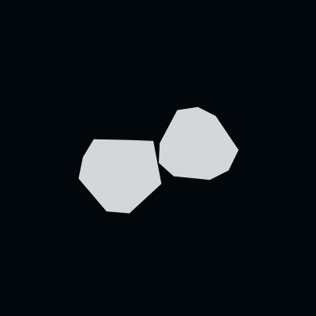
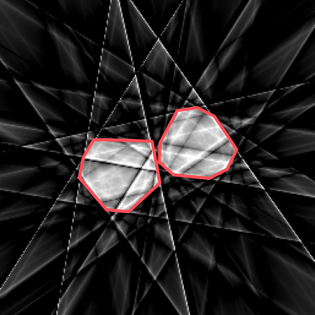
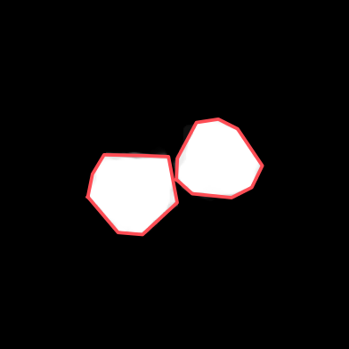
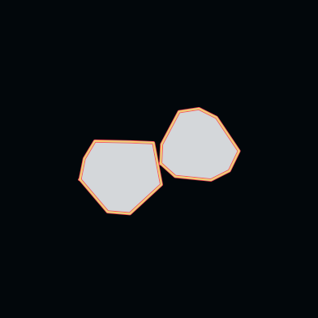
SAME THREE DEVELOPMENT CASES
這是三個先前已檢視且成功初始化的開發案例。幾何法三例最低，但不足以推出對未知案例或其他參數設定的普遍優勢。
| 方法 | 中位數 | 最大值 |
|---|---|---|
| 幾何包絡法 | 0.001257 | 0.003025 |
| FBP 0.5 | 0.101903 | 0.291328 |
| SIRT 500 | 0.021102 | 0.024190 |
| TV 1500 | 0.033196 | 0.040913 |
FAILURE ACCOUNTING
圖左是真值，圖右是事後選出的最接近分離量測角。紅帶表示投影仍重疊，正值沒有分成兩段，無法建立雙區塊錨點。四例不計入成功案例誤差。
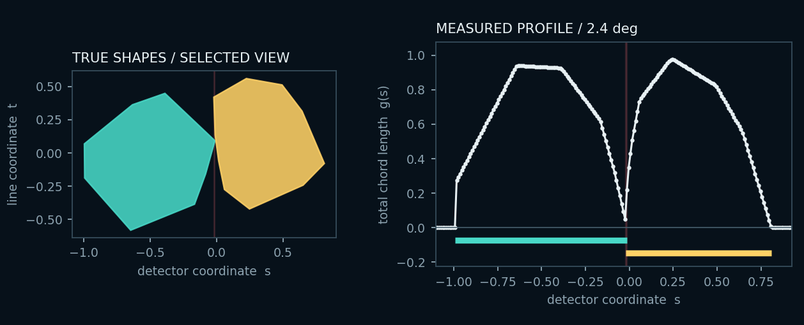
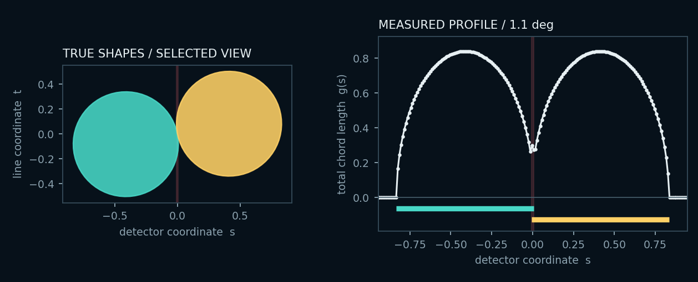
READING THE FIGURE
同一列的方法使用同一份 sinogram；雙凸體像素法共享初始外框、值域與分割規則。
單凸體與雙凸體不是同一案例集，誤差只能在各自實驗協定內解讀。
紅色真值邊界只在完成重建後用於視覺疊圖與誤差評估。
目前已實跑 FBP、SIRT 與指定 TV；DALM、TVR-DART 尚未取得可填入的誤差。
數值來源：sparse_angle_endpoint_vs_fbp、submission_gate_20260923、quick_baselines_20260929。下載本頁圖像指標 JSON